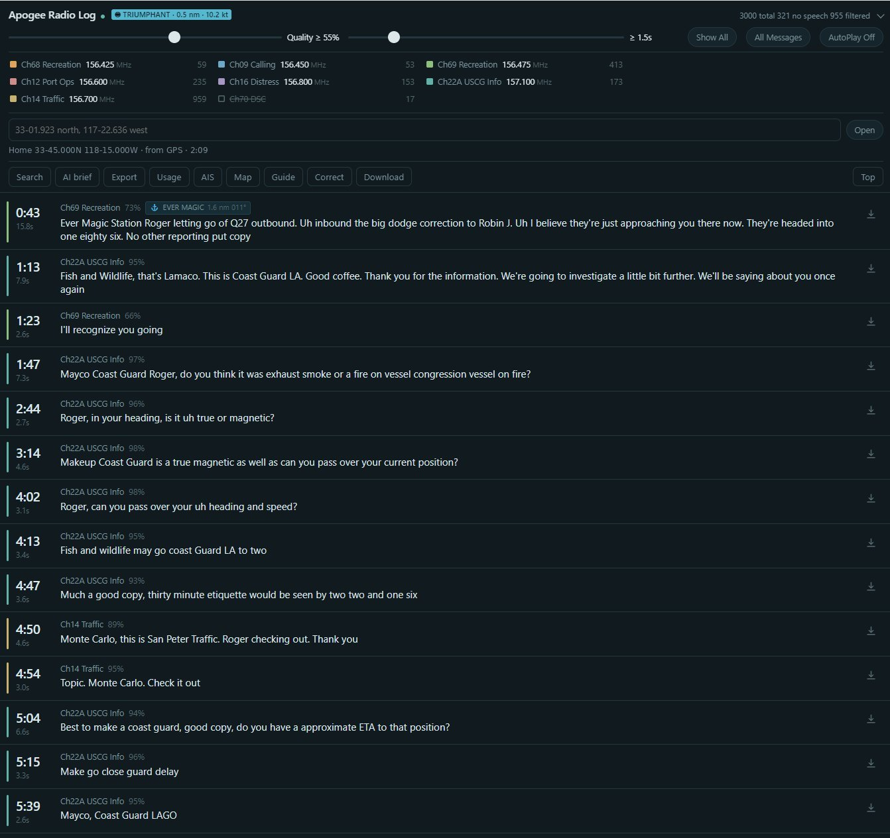
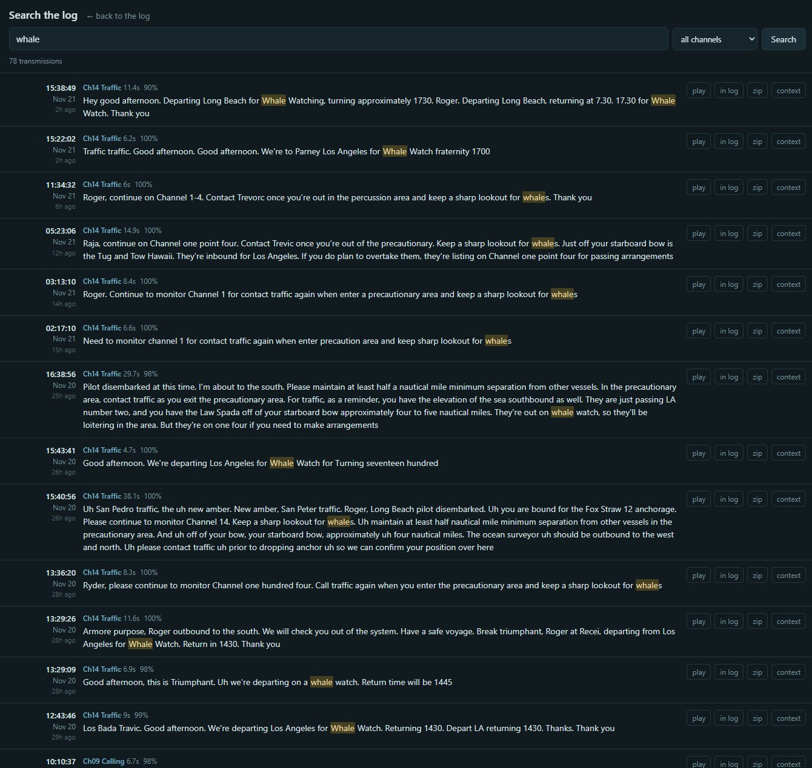
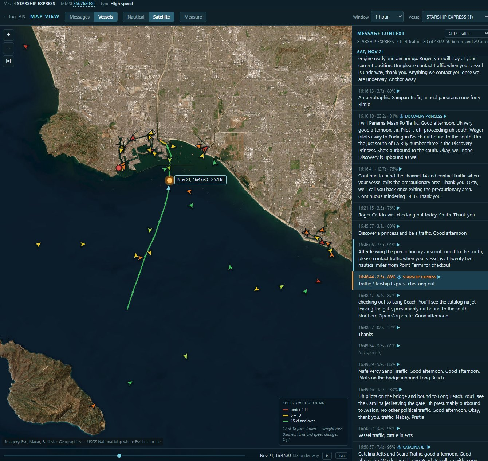
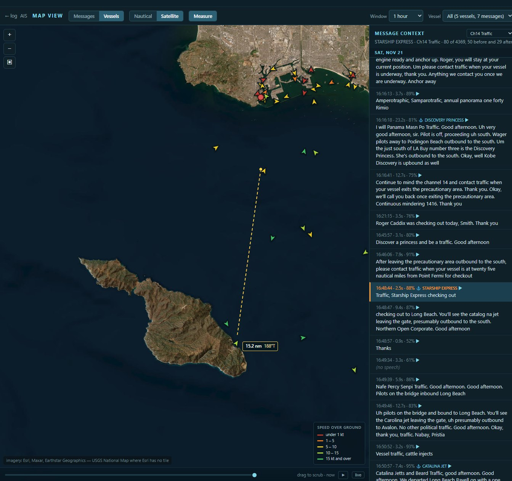
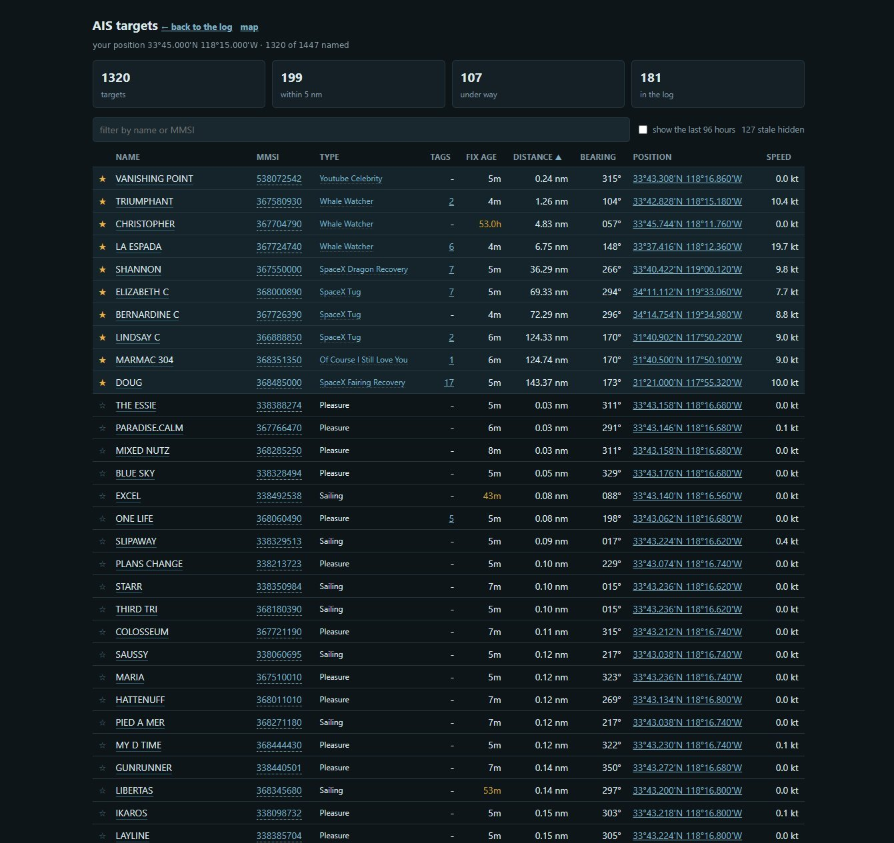
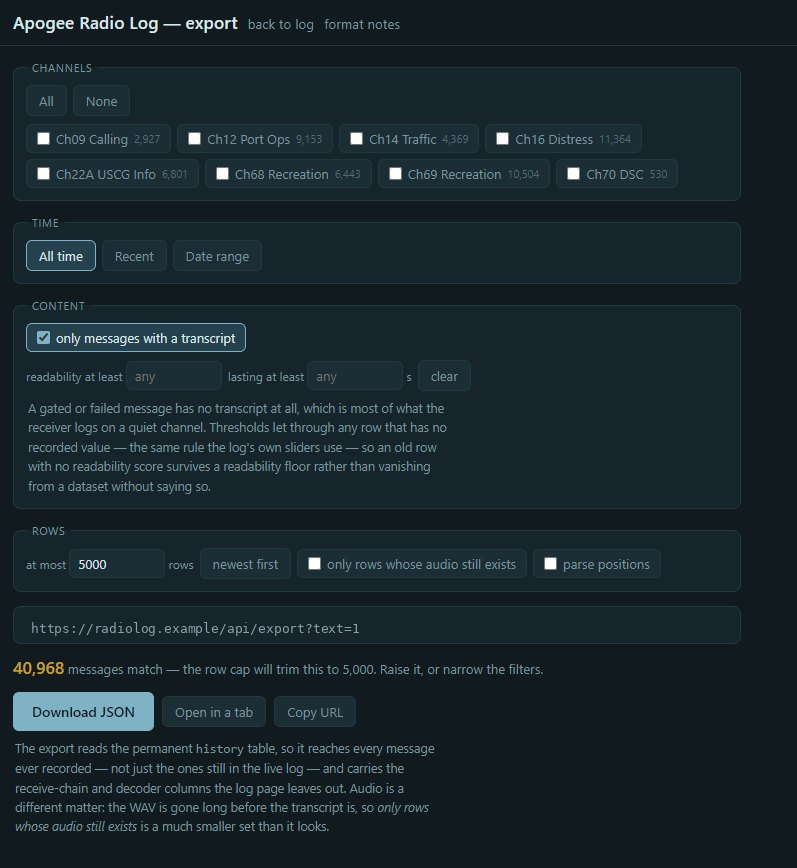
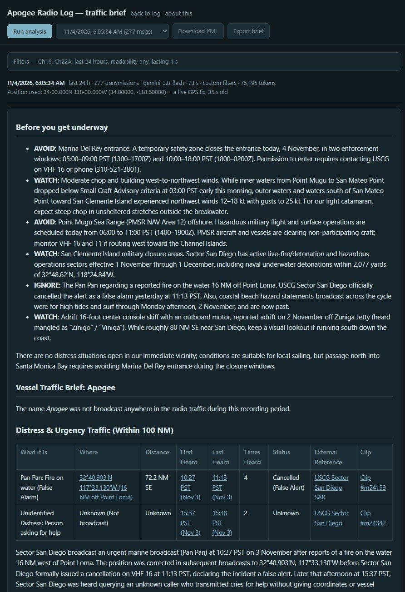

What the log shows you, what the map is for, and how to get a recording out of it before it disappears.
The watchkeeper listens to several VHF radio channels at once, notices when someone transmits, records each transmission as a separate audio file, transcribes it, and puts the result in a log you can read on a phone.
It is a watchkeeper, not a scanner. A scanner stops on one channel at a time and you miss whatever happens on the others. This receives the whole band continuously and splits it into channels in software, so nothing is missed while something else is talking.
The band is marine VHF, 156–158 MHz, narrowband FM: boats, harbour control, vessel traffic services and the Coast Guard. Channel 70 is not voice at all — it carries the digital calls that precede an exchange, and those are decoded and logged alongside it.
Alongside the radio it takes an AIS feed, so it also knows what is around you. Transmissions are matched to vessels by name, which is what turns an unattributed voice into EVER MAGIC, and the two are drawn together on a map with a day of replay behind it.
None of the AIS side is required. Without a feed the radio works exactly as it always did; the vessel names simply stop appearing.
The log is a web page. Open it on a phone, a tablet or a laptop — there is nothing to install and no password. Every transmission the receiver hears appears at the top of the list within a few seconds of the speaker letting go of the button.
Newest is first. The page refreshes itself, so leave it open and it stays current.

Each row is one transmission. Reading left to right:
| What you see | What it means |
|---|---|
| Coloured bar | Which channel. The colours match the legend in the settings panel. |
8:06 |
How long ago it was heard, counting up live. After fifteen minutes the row dims slightly, so a glance tells you what is current. |
6.0s |
How long the transmission lasted. |
Ch16 Distress |
The channel name. |
93% |
How clearly it came through. Not volume — see §9. |
| A vessel name | The transmission was matched to a vessel AIS can see, with her range and bearing. Tap it to follow her. See below. |
| The text | What the computer thinks was said. |
Tap anywhere on a row to play the recording. Tap it again to stop. The row you are listening to is highlighted.
The download arrow on the right saves that recording and its transcript together, which is what you want if you need to send a clip to someone or keep it before it expires.
| Badge | Meaning |
|---|---|
| DISTRESS in the header | Urgent traffic in the last thirty minutes. Tap it and the page jumps straight to the message, even if your filters would normally hide it. |
| A teal chip naming a vessel | One of your favourites is close by and under way, with her range and speed. It appears on its own when she comes within range and goes when she leaves. |
| LISTEN on a row | This message used distress or urgency wording. It does not mean the text is wrong and it does not mean there is an emergency — it means play the audio rather than trusting what is written. |
| A map pin | A position was read out. Tap it to open the location in a map. The number beside it is how far away that is from the boat. |
| THROTTLED | The Raspberry Pi is hot and has slowed itself down. Transcripts will lag behind the audio until it cools. |
| AUTO | Autoplay is on — new messages will play themselves as they arrive. |
| The dot by the title | Green means the page is talking to the receiver. If it fades, the connection has dropped and what you are reading may be stale. |
Radio operators often read out a position without saying north or west. When that happens the receiver assumes you are in the hemisphere the boat is in. It is almost always right and it is labelled so you can tell.
When a transmission names a vessel that AIS can see, the row carries her name, her range and her bearing. Tap the name to see everything she has said.
This is a guess, and deliberately a generous one. Vessels rarely repeat their own name, transcripts are imperfect, and plenty of boats are called things like Serenity or Liberty that turn up in ordinary speech. The matcher errs towards tagging, on the reasoning that a wrong name is obvious at a glance and a missed one is invisible. If a tag looks wrong, it probably is — play the audio.
Tap the header — anywhere along the title bar — to open it. Tap again to close. Everything in here affects only your own screen; it changes nothing on the receiver and nothing for anyone else looking at the same log.
| Control | What it does |
|---|---|
| Quality slider | Hides messages below a clarity threshold. Dragging it to about 60% removes most of the noise and keeps most of the speech. At 0 you see everything. |
| Length slider | Hides transmissions shorter than the chosen number of seconds. Good for clearing out squelch clicks and keyed microphones. |
| Hide No Speech | Hides rows where nothing intelligible was found. The recording is still there; it is only hidden from the list. |
| AutoPlay | Plays each new message as it arrives. It respects your filters, so a muted channel stays silent. |
| Channel legend | Tap a channel to mute it — useful when one channel is busy and you only care about another. The count beside a muted channel keeps running, so you can see what you are missing. |
| Coordinate converter | Paste a position in any format and get it back in the others, plus a map link. |
| Correct | Turns every row's download arrow into an edit box, so you can type what was actually said. See below. |
| Download | Turns every row's arrow into a tick box, for taking several recordings away at once as a single zip. |
The panel also holds the links to the other pages: Search, AI brief, Export, Usage, AIS, Map, this guide, and Top.
Nothing you do with the sliders or the channel legend removes anything. The counts at the top of the page always show the true total alongside how many are currently hidden, so you can tell at a glance that the quiet log in front of you is a filter rather than a quiet afternoon.
Correct in the settings panel puts an edit box on every row. Type what was actually said and it replaces the decoder's attempt everywhere — the log, search, and anything you export afterwards.
The original is never thrown away; it is kept alongside your correction. Blanking the box does not undo a correction, because an empty transcript is not a correction — if you want the decoder's reading back, that is a job for the technical manual.
Correcting a message logged as no speech found makes it findable by search like any other, which turns this into a way of rescuing traffic the decoder gave up on entirely.
The main log holds roughly the last three days. Search goes back through everything the receiver has ever heard, including messages whose audio was discarded long ago.

Search matches the words in transcripts, so a vessel name, a place, or a phrase like taking on water will find it. Several words must all appear; put a phrase in double quotes to match it whole. Each result offers:
The search is in the address of the page, so a set of results can be bookmarked or sent to somebody.
Audio is kept in memory to spare the memory card, which means every recording is lost when the Pi reboots or loses power, and older ones are discarded as new traffic arrives. The written log survives; the sound does not.
If a clip matters, download it the day you hear it.
Where the radio and the AIS meet. Reached from Map in the settings panel.

The toggle in the bar chooses between them:
Click a vessel to draw her track. The colours along it are her speed, and a dashed section is a gap in reception rather than a leg she actually sailed — the receiver simply did not hear her for a while.
The Window dropdown in the bar chooses how far back the map looks. Changing it does not move the map: it changes what is in scope, not where you are looking, so a view you have zoomed in to set survives asking for more context in it. The ▣ button under the zoom controls frames everything currently drawn, for when that is what you want.
Nautical and Satellite switch the backdrop. The chart layer comes from an outside service, so it is the one part of the map that needs connectivity; the satellite imagery and everything drawn on top keep working.
The slider along the bottom scrubs the last 24 hours. Drag it and the whole fleet moves to where it was at that moment. The ▶ button plays it forward at sixty times real speed, so an hour of traffic takes a minute. live brings you back to now.
This is the quickest way to answer what was going on when she said that — scrub to the time of a message and look at what was around her.
Measure turns the cursor into a crosshair. Click once to drop a pin, then move the mouse: the distance and true bearing from the pin to the pointer are read out continuously. Click again to move the pin; Esc or the button again puts things back.

Distances are in nautical miles, switching to yards under a tenth of a mile, because 0.08 nm is not a number anyone can use. The pin is pinned to the water rather than the screen, so you can zoom and pan and it stays where you put it.
It is a mouse tool and does not appear on a phone: there is no pointer to measure to.
The panel on the right shows traffic as it arrives — the most recent hundred messages, with new ones appearing at the bottom. If you scroll up to read something it stays put rather than dragging you back down.
The dropdown above it chooses what to show: all channels, a single channel, tagged vessel only for just the selected vessel's traffic, or no messages to clear it away entirely. Clicking a dot on the map holds the panel on that exchange; live releases it and the traffic resumes.
While the replay is running the panel follows the clock instead, showing what was being said at the moment you are watching.
AIS in the settings panel lists everything the receiver can see, nearest first, with range and bearing from the boat.

The four tiles across the top are counts and filters at the same time, and they combine: tapping within 5 nm and under way shows vessels that are both, not either. In the log is the useful one when you are chasing a voice — it narrows the list to vessels that have actually said something.
The filter box matches on name or MMSI. Tapping a vessel's name shows everything she has said; tapping her position opens her on the map.
Vessels drop off the list two hours after their last report. Show the last 96 hours brings back everyone heard in the last four days, with the real age of each fix shown, so you can tell a current position from a stale one.
The star pins a vessel. Favourites sort to the top of the list whatever their age, which is the point of them — a vessel worth watching is usually worth seeing precisely when she has gone quiet.
They are remembered by the receiver rather than the browser, so the same vessels are starred on the phone, on the tablet at the nav station and on the laptop.
When a favourite comes close and is under way, a chip appears in the log's header with her name, range and speed. It is the one thing on the log page that is about a particular vessel rather than the radio.
The type a vessel broadcasts about herself is a number from a fixed list. It is often missing, sometimes wrong, and never says the thing you actually want to know — that this one is a buddy boat, or the harbour patrol, or a tug you work with.
Click the Type of any favourite and type your own words. Your name replaces the broadcast one everywhere the type is shown, including the map. Hovering over it still shows what she actually reports, so nothing is hidden.
Clearing the box puts the broadcast type back. Unstarring a vessel does not lose the name you gave her; star her again and it is still there.
The arrow at the right of any row downloads that transmission as a zip holding the audio and a text file. The text file is worth a look in its own right: alongside the transcript it carries how the message was received and how the decoder handled it, which is often the explanation for a transcript that reads oddly.
Download in the settings panel turns every arrow into a tick box. Choose the messages you want and take them as a single zip — one zip because phones routinely block the second download of a pair.
That zip contains a small player page. Open it and the exchange plays through in order with the transcripts beside it, which is the difference between sending somebody eight files and sending them something they can actually listen to.
Export produces a data file rather than audio: a day of Channel 16, everything from a date range, every message mentioning a position.

The form exists because the useful exports are the narrow ones and typing a query string on a phone is miserable. Channels are listed with their message counts, so an empty one is obvious before you export it, and the match count updates as you go.
Export reads the permanent record, so it reaches every message ever logged, not just the ones still playable. Audio is a separate matter — the recording is gone long before the transcript is.
AI brief asks a language model to read the last day of traffic and write a short summary — what the Coast Guard has been broadcasting, anything that happened near the boat, and what the weather is doing. It takes a minute or so and costs a small amount against the account key.
It is a convenience, not a source. It is summarising transcripts that are themselves approximate, so treat anything surprising in it as a prompt to go and read the underlying messages — which is why every claim in the brief links back to the traffic it came from.
An example brief is kept with this guide: a real one from a November morning, with the position rounded. It opens with what to avoid, watch, do and ignore before getting under way, then the distress traffic, the navigational hazards, the weather, and a section for the merely odd — in that run, a mariner on Ch16 with strong opinions about floating logs.
Note what it does with the Pan-Pan that was later cancelled: it lists it under ignore, with the cancellation linked, rather than leaving it out. A brief that silently drops resolved traffic is one you cannot trust to have seen it.

It is also the one feature that needs the internet. Everything else here works at anchor with no connectivity at all.
On a Raspberry Pi in a sealed case this is a thermal problem as much as a radio one. The report plots temperature, fan speed and message rate on one axis, so you can see whether a quiet afternoon was quiet traffic or a hot box.
When the Pi gets too warm it slows the transcriber down rather than dropping audio, and the log shows THROTTLED while that is happening. Recording continues; the text simply arrives late.
The figure beside each channel name is readability — how speech-like the recording is — not how strong the signal was.
A distant, hissy transmission that is nevertheless clear speech can score high. A powerful burst of interference scores low. This is deliberate: what matters when you are skimming a log is whether there are words in there, not whether the transmitter was close.
Transcripts are produced by a speech model working on noisy radio audio. They are sometimes wrong in ways that read perfectly well — a vessel name, a channel number or a position can come out plausible and incorrect. On anything that matters, play the audio. The whole system is built to prefer a garbled transcript over an invented one, and this is the reason.
| What you see | What it usually is |
|---|---|
| The dot by the title has faded | The page has lost the receiver. What you are reading is a snapshot from whenever it last got through. Reload. |
| Nothing has arrived for hours | Check the channel legend is not muted and the quality slider is not up high. The counts at the top show the true total against what is hidden, which settles it in a glance. |
| A transcript is nonsense | Normal on weak or clipped audio. Play the recording; correct it if it matters. |
| A vessel name looks wrong | It probably is. Tagging deliberately errs towards guessing. The audio decides. |
| A vessel is in the wrong place on the map | One bad AIS report can put a vessel on another continent for a single fix. Obvious ones are filtered out of the track, but a live position has only itself to go on. |
| The chart layer is blank | The chart service is external and sometimes unreachable. Switch to Satellite; everything drawn on top is unaffected. |
| THROTTLED will not clear | The Pi is running hot for a long stretch. See the thermal report. |
| A recording will not play | It has been evicted. The transcript stays; the audio does not. See the warning in §3. |
Anything past this point — what the receiver is doing, how the decoders work, how to change the configuration — is in the technical manual.